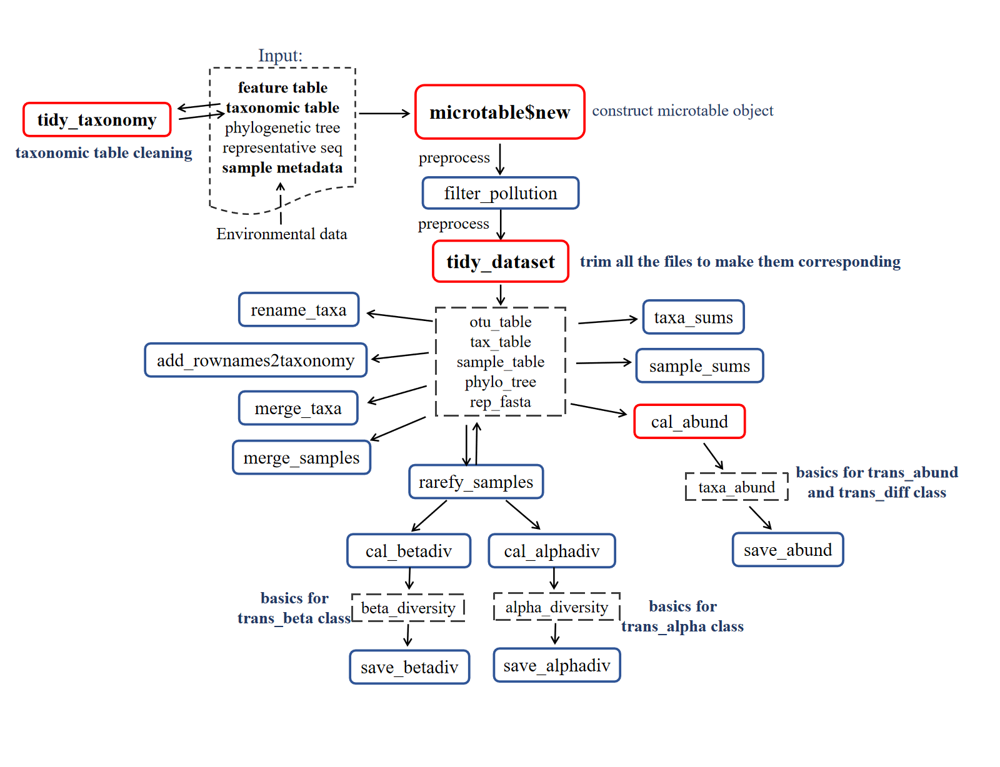

Chapter 3 Basic class
The microtable class is the basic class. All the other classes depend on the microtable class.

The objects inside the rectangle with full line represent functions. The red rectangle means it is extremely important function. The dashed line denotes the key objects (input or output of functions) that deserve more attention.
3.1 microtable class
Many tools can be used for the bioinformatic analysis of amplicon sequencing data, such as QIIME (Caporaso et al. 2010), QIIME2 (Bolyen et al. 2019), usearch (https://www.drive5.com/usearch/), mothur (Schloss et al. 2009), SILVAngs (https://ngs.arb-silva.de/silvangs/), LotuS2 (Ozkurt et al. 2022), and RDP (http://rdp.cme.msu.edu/). Although the formats of result files may vary across tools, the main contents can be generally classified into the following parts: (1) OTU/ASV table, i.e. the feature-sample abundance table; (2) taxonomic assignment table; (3) representative sequences; (4) phylogenetic tree; (5) metadata. It is generally useful to create a detailed sample metadata table to store all the sample information (including the environmental data).
The microtable class is the basic class and designed to store the basic data for all the downstream analysis in the microeco package. At least, the OTU table (i.e. feature-sample abundance table) should be provided to create microtable object. Thus, the microtable class can determine that the sample information table is missing and create a default sample table according to sample names in otu_table. To make the file input more convenient, we also build another R package file2meco (https://github.com/ChiLiubio/file2meco) to read the output files of some tools into microtable object. Currently, those tools/softwares include not only commonly-used QIIME (Caporaso et al. 2010) and QIIME2(Bolyen et al. 2019), but also several metagenomic tools, such as HUMAnN (Franzosa et al. 2018) and kraken2 (Wood, Lu, and Langmead 2019). In this tutorial, the data inside the package was employed to show some basic operations.
3.1.1 Prepare the example data
The example data inside the microeco package is used to show the main part of the tutorial. This dataset arose from 16S rRNA gene Miseq sequencing results of wetland soils in China published by An et al. (An et al. 2019), who surveyed soil prokaryotic communities in Chinese inland wetlands (IW), coastal wetland (CW) and Tibet plateau wetlands (TW) using amplicon sequencing. These wetlands include both saline and non-saline samples (classified for the tutorial). The sample information table has 4 columns: “SampleID”, “Group”, “Type” and “Saline”. The column “SampleID” is same with the rownames. The column “Group” represents the IW, CW and TW. The column “Type” means the sampling region: northeastern region (NE), northwest region (NW), North China area (NC), middle-lower reaches of the Yangtze River (YML), southern coastal area (SC), upper reaches of the Yangtze River (YU), Qinghai-Tibet Plateau (QTP). The column “Saline” denotes the saline soils and non-saline soils. In this dataset, the environmental factor table is separated from the sample information table. It is also recommended to put all the environmental data into sample information table.
library(microeco)
# load the example data; 16S rRNA gene amplicon sequencing dataset
# metadata table; data.frame
data(sample_info_16S)
# feature table; data.frame
data(otu_table_16S)
# taxonomic assignment table; data.frame
data(taxonomy_table_16S)
# phylogenetic tree; not necessary; use for the phylogenetic analysis
# Newick format; use read.tree function of ape package to read a tree
data(phylo_tree_16S)
# load the environmental data table if it is not in sample table
data(env_data_16S)
# use pipe operator in magrittr package
library(magrittr)
# fix the random number generation to make the results repeatable
set.seed(123)
# make the plotting background same with the tutorial
library(ggplot2)
theme_set(theme_bw())Make sure that the data types of sample_table, otu_table and tax_table are all data.frame format as the following part shows.
class(otu_table_16S)## [1] "data.frame"otu_table_16S[1:5, 1:5]| S1 | S2 | S3 | S4 | S5 | |
|---|---|---|---|---|---|
| OTU_4272 | 1 | 0 | 1 | 1 | 0 |
| OTU_236 | 1 | 4 | 0 | 2 | 35 |
| OTU_399 | 9 | 2 | 2 | 4 | 4 |
| OTU_1556 | 5 | 18 | 7 | 3 | 2 |
| OTU_32 | 83 | 9 | 19 | 8 | 102 |
class(taxonomy_table_16S)## [1] "data.frame"taxonomy_table_16S[1:5, 1:3]| Kingdom | Phylum | Class | |
|---|---|---|---|
| OTU_4272 | k__Bacteria | p__Firmicutes | c__Bacilli |
| OTU_236 | k__Bacteria | p__Chloroflexi | c__ |
| OTU_399 | k__Bacteria | p__Proteobacteria | c__Betaproteobacteria |
| OTU_1556 | k__Bacteria | p__Acidobacteria | c__Acidobacteria |
| OTU_32 | k__Archaea | p__Miscellaneous Crenarchaeotic Group | c__ |
Generally, users’ taxonomic table has some messy information, such as NA, unidentified and unknown.
These information can potentially influence the following taxonomic abundance calculation and other taxonomy-based analysis.
So it is usually necessary to clean this data using the tidy_taxonomy function.
Another very important result of this operation is to unify the taxonomic prefix automatically,
e.g., converting D_1__ to p__ for Phylum level or adding p__ to Phylum directly if no prefix is found.
# make the taxonomic information unified, very important
taxonomy_table_16S %<>% tidy_taxonomyThe rownames of sample_table in microtable object (i.e. sample names) are used for selecting samples/groups in all the related operations in the package. Using pure number as sample names is not recommended in case of unknown disorder or man-made mistake. Before creating microtable object, make sure that the rownames of sample information table are sample names.
class(sample_info_16S)## [1] "data.frame"sample_info_16S[1:5, ]| SampleID | Group | Type | Saline | |
|---|---|---|---|---|
| S1 | S1 | IW | NE | Non-saline soil |
| S2 | S2 | IW | NE | Non-saline soil |
| S3 | S3 | IW | NE | Non-saline soil |
| S4 | S4 | IW | NE | Non-saline soil |
| S5 | S5 | IW | NE | Non-saline soil |
In this example, the environmental data is stored in the env_data_16S alone. The user can also directly integrate those data into the sample information table.
class(env_data_16S)## [1] "data.frame"| Latitude | Longitude | Altitude | Temperature | Precipitation | |
|---|---|---|---|---|---|
| S1 | 52.96 | 122.6 | 432 | -4.2 | 445 |
| S2 | 52.95 | 122.6 | 445 | -4.3 | 449 |
| S3 | 52.95 | 122.6 | 430 | -4.3 | 449 |
| S4 | 52.95 | 122.6 | 430 | -4.3 | 449 |
| S5 | 52.95 | 122.6 | 429 | -4.3 | 449 |
class(phylo_tree_16S)## [1] "phylo"Then, we create an object of microtable class. This operation is very similar with the package phyloseq(Mcmurdie and Holmes 2013), but in microeco it is more brief. The otu_table in the microtable class must be the feature-sample format: rownames - OTU/ASV/pathway/other names; colnames - sample names. The colnames in otu_table must have overlap with rownames of sample_table. Otherwise, the following check can filter all the samples of otu_table because of no same sample names between otu_table and sample_table.
# In R6 class, '$new' is the original method used to create a new object of class
# If you only provide abundance table, the class can help you create a sample info table
dataset <- microtable$new(otu_table = otu_table_16S)## No sample_table provided, automatically use colnames in otu_table to create one ...class(dataset)## [1] "microtable" "R6"# generally add the metadata
dataset <- microtable$new(otu_table = otu_table_16S, sample_table = sample_info_16S)
dataset## microtable-class object:
## sample_table have 90 rows and 4 columns
## otu_table have 13628 rows and 90 columns# Let's create a microtable object with more information
dataset <- microtable$new(sample_table = sample_info_16S, otu_table = otu_table_16S, tax_table = taxonomy_table_16S, phylo_tree = phylo_tree_16S)
dataset## microtable-class object:
## sample_table have 90 rows and 4 columns
## otu_table have 13628 rows and 90 columns
## tax_table have 13628 rows and 7 columns
## phylo_tree have 14096 tips3.1.2 How to read your files to microtable object?
The above-mentioned example data are directly loaded from microeco package.
So the question is how to read your data to create a microtable object?
There are two ways:
▲ 1. Use file2meco package
R package file2meco (https://chiliubio.github.io/microeco_tutorial/file2meco-package.html) is designed to directly read the output files of some famous tools into microtable object.
Currently, it supports QIIME (Caporaso et al. 2010), QIIME2(Bolyen et al. 2019),
HUMAnN (Franzosa et al. 2018), MetaPhlAn (Truong et al. 2015), kraken2 (Wood, Lu, and Langmead 2019), phyloseq (Mcmurdie and Holmes 2013), etc.
Please read the tutorial of file2meco package for more detailed information (https://chiliubio.github.io/microeco_tutorial/file2meco-package.html).
▲ 2. Other cases
To transform customized files to microtable object,
there should be two steps:
I) read files to R
The required format of microtable$new parameters, otu_table, sample_table and tax_table, are all the data.frame, which is the most frequently-used data format in R.
So no matter what the format the files are, they should be first read into R with some functions, such as read.table and read.csv.
If the user want to perform phylogenetic analysis, please also read your phylogenetic tree using read.tree function of ape package and
provide the tree to the phylo_tree parameter of microtable$new function like the above example.
II) create the microtable object
Then the user can create the microtable object like the operation in the last section.
Please also see the help document of the microtable class for detailed descriptions using the following help command.
# search the class name, not the function name
?microtable
# then see microtable$new()3.1.3 Functions in microtable class
Then, we remove OTUs which are not assigned in the Kingdom “k__Archaea” or “k__Bacteria”.
# use R subset function to filter taxa in tax_table
dataset$tax_table %<>% base::subset(Kingdom == "k__Archaea" | Kingdom == "k__Bacteria")
# another way with grepl function
dataset$tax_table %<>% .[grepl("Bacteria|Archaea", .$Kingdom), ]
dataset## microtable-class object:
## sample_table have 90 rows and 4 columns
## otu_table have 13628 rows and 90 columns
## tax_table have 13330 rows and 7 columns
## phylo_tree have 14096 tipsWe also remove OTUs with the taxonomic assignments “mitochondria” or “chloroplast”.
# This will remove the lines containing the taxa word regardless of taxonomic ranks and ignoring word case in the tax_table.
# So if you want to filter some taxa not considerd pollutions, please use subset like the previous operation to filter tax_table.
dataset$filter_pollution(taxa = c("mitochondria", "chloroplast"))## Total 34 features are removed from tax_table ...dataset## microtable-class object:
## sample_table have 90 rows and 4 columns
## otu_table have 13628 rows and 90 columns
## tax_table have 13296 rows and 7 columns
## phylo_tree have 14096 tipsTo make the OTU and sample information consistent across all files in the dataset object, we use function tidy_dataset to trim the dataset.
dataset$tidy_dataset()
print(dataset)## microtable-class object:
## sample_table have 90 rows and 4 columns
## otu_table have 13296 rows and 90 columns
## tax_table have 13296 rows and 7 columns
## phylo_tree have 13296 tipsThen let’s use sample_sums() to check the sequence numbers in each sample.
dataset$sample_sums() %>% range## [1] 10316 37087Sometimes, in order to reduce the effects of sequencing depth on the diversity measurements,
it is optional to perform the resampling to make the sequence number equal for each sample.
The function rarefy_samples can invoke the function tidy_dataset automatically before and after the rarefying.
In v0.19.0, method = 'SRS' is available to perfom normalization by scaling with ranked subsampling (Beule and Karlovsky 2020).
The default method is method = 'rarefying'.
# As an example, use 10000 sequences in each sample
dataset$rarefy_samples(sample.size = 10000)## 530 features are removed because they are no longer present in any sample after random subsampling ...## 530 taxa with 0 abundance are removed from the otu_table ...dataset$sample_sums() %>% range## [1] 10000 10000For v0.17.0, the function save_table can be performed to save all the basic data in microtable object to local files,
including feature abundance, metadata, taxonomic table, phylogenetic tree and representative sequences.
dataset$save_table(dirpath = "basic_files", sep = ",")Then, let’s calculate the taxa abundance at each taxonomic rank using cal_abund().
This function generate a list called taxa_abund stored in the microtable object.
This list contain several data frame of the abundance information at each taxonomic rank.
It’s worth noting that the cal_abund() function can be used to solve more complicated cases with special parameters,
such as supporting both the relative and absolute abundance calculation and selecting the partial ‘taxonomic’ columns.
Those have been shown in file2meco package part (https://chiliubio.github.io/microeco_tutorial/file2meco-package.html#humann-metagenomic-results) with complex metagenomic dataset.
# use default parameters
dataset$cal_abund()## The result is stored in object$taxa_abund ...# return dataset$taxa_abund
class(dataset$taxa_abund)## [1] "list"# show part of the relative abundance at Phylum level
dataset$taxa_abund$Phylum[1:5, 1:5]| S1 | S2 | S3 | S4 | S5 | |
|---|---|---|---|---|---|
| **k__Bacteria|p__Proteobacteria** | 0.2008 | 0.1996 | 0.2151 | 0.261 | 0.1663 |
| **k__Bacteria|p__Chloroflexi** | 0.1215 | 0.1937 | 0.1588 | 0.1471 | 0.3098 |
| **k__Bacteria|p__Bacteroidetes** | 0.1816 | 0.0359 | 0.0267 | 0.0215 | 0.0266 |
| **k__Bacteria|p__Acidobacteria** | 0.1215 | 0.2467 | 0.2532 | 0.262 | 0.2482 |
| **k__Bacteria|p__Actinobacteria** | 0.1182 | 0.0861 | 0.0875 | 0.0954 | 0.0824 |
The function save_abund() can be used to save the taxa abundance file to a local place easily.
dataset$save_abund(dirpath = "taxa_abund")All the abundance tables can also be merged into one to save from v0.15.0. This type of file format can be opened directly by other software, such as STAMP.
# tab-delimited, i.e. mpa format
dataset$save_abund(merge_all = TRUE, sep = "\t", quote = FALSE)
# remove those unclassified
dataset$save_abund(merge_all = TRUE, sep = "\t", rm_un = TRUE, rm_pattern = "__$|Sedis$", quote = FALSE)Then, let’s calculate the alpha diversity. The result is also stored in the object microtable automatically.
# If you want to add Faith's phylogenetic diversity, use PD = TRUE, this will be a little slow
dataset$cal_alphadiv(PD = FALSE)## The result is stored in object$alpha_diversity ...# return dataset$alpha_diversity
class(dataset$alpha_diversity)## [1] "data.frame"# save dataset$alpha_diversity to a directory
dataset$save_alphadiv(dirpath = "alpha_diversity")Let’s go on to beta diversity with function cal_betadiv().
If method parameter is not provided, the function automatically calculates Bray-curtis, Jaccard, weighted Unifrac and unweighted unifrac matrixes (Lozupone and Knight 2005).
# unifrac = FALSE means do not calculate unifrac metric
# require GUniFrac package installed
dataset$cal_betadiv(unifrac = TRUE)
# return dataset$beta_diversity
class(dataset$beta_diversity)
# save dataset$beta_diversity to a directory
dataset$save_betadiv(dirpath = "beta_diversity")3.1.4 merge taxa or samples
Merging taxa according to a specific taxonomic rank level of tax_table can generate a new microtable object. In the new microtable object, each feature in otu_table represents one taxon at the output level.
test <- dataset$merge_taxa(taxa = "Genus")
test## microtable-class object:
## sample_table have 90 rows and 4 columns
## otu_table have 1245 rows and 90 columns
## tax_table have 1245 rows and 6 columnsSimilarly, merging samples according to a specific group of sample_table can also generate a new microtable object.
test <- dataset$merge_samples(use_group = "Group")
test## microtable-class object:
## sample_table have 3 rows and 1 columns
## otu_table have 12766 rows and 3 columns
## tax_table have 12766 rows and 7 columns
## phylo_tree have 12766 tips3.1.5 subset of samples
We donnot provide a special function to filter samples in microtable object, as we think it is redundant. We recommend manipulating the sample_table in microtable object directly. For example, if you want to extract samples of ‘CW’ group, please do like this:
# remember first clone the whole dataset
# see https://chiliubio.github.io/microeco_tutorial/notes.html#clone-function
group_CW <- clone(dataset)
# select 'CW'
group_CW$sample_table <- subset(group_CW$sample_table, Group == "CW")
# or: group_CW$sample_table <- subset(group_CW$sample_table, grepl("CW", Group))
# use tidy_dataset to trim all the basic files
group_CW$tidy_dataset()
group_CW## microtable-class object:
## sample_table have 30 rows and 4 columns
## otu_table have 9727 rows and 30 columns
## tax_table have 9727 rows and 7 columns
## phylo_tree have 9727 tips
## Taxa abundance: calculated for Kingdom,Phylum,Class,Order,Family,Genus,Species
## Alpha diversity: calculated for Observed,Chao1,se.chao1,ACE,se.ACE,Shannon,Simpson,InvSimpson,Fisher,Pielou,Coverage
## Beta diversity: calculated for bray,jaccard3.1.6 subset of taxa
Similar with above operation, subset of features can be achieved by manipulating the tax_table in microtable object directly.
proteo <- clone(dataset)
proteo$tax_table <- subset(proteo$tax_table, Phylum == "p__Proteobacteria")
# or: proteo$tax_table <- subset(proteo$tax_table, grepl("Proteobacteria", Phylum))
proteo$tidy_dataset()
proteo## microtable-class object:
## sample_table have 90 rows and 4 columns
## otu_table have 3052 rows and 90 columns
## tax_table have 3052 rows and 7 columns
## phylo_tree have 3052 tips
## Taxa abundance: calculated for Kingdom,Phylum,Class,Order,Family,Genus,Species
## Alpha diversity: calculated for Observed,Chao1,se.chao1,ACE,se.ACE,Shannon,Simpson,InvSimpson,Fisher,Pielou,Coverage
## Beta diversity: calculated for bray,jaccard# proteo is a new microtable object with all OTUs coming from phylum Proteobacteria
# beta diversity dissimilarity for Proteobacteria
proteo$cal_betadiv()## The result is stored in object$beta_diversity ...3.1.7 Other examples
The function add_rownames2taxonomy can add the rownames of tax_table as the last column of tax_table directly.
This operation is very useful in some analysis, e.g. biomarker finding at OTU/ASV level with the relative abundance.
test <- clone(dataset)
ncol(test$tax_table)
test$add_rownames2taxonomy(use_name = "OTU")
ncol(test$tax_table)The filter_taxa function can be applied to filter the features with low abundance or occurrence frequency when needed.
For other operations on the features, please directly manipulate the otu_table of your microtable object.
# It is better to have a backup before filtering features
dataset_filter <- clone(dataset)
dataset_filter
# In this example, mean relative abundance threshold 0.0001
# occurrence frequency 0.1; 10% samples have the target features
dataset_filter$filter_taxa(rel_abund = 0.0001, freq = 0.1)
dataset_filterIn microtable$new, if auto_tidy = TRUE, the function can automatically use tidy_dataset to make all files uniform.
Then, all other functions in microtable will also do this. But if the user changes the file in microtable object,
the class can not recognize this modification, the user should use tidy_dataset function to manually trim the microtable object.
test <- microtable$new(sample_table = sample_info_16S[1:40, ], otu_table = otu_table_16S, auto_tidy = FALSE)
test## microtable-class object:
## sample_table have 40 rows and 4 columns
## otu_table have 13628 rows and 90 columnstest1 <- microtable$new(sample_table = sample_info_16S[1:40, ], otu_table = otu_table_16S, auto_tidy = TRUE)
test1## microtable-class object:
## sample_table have 40 rows and 4 columns
## otu_table have 12747 rows and 40 columnstest1$sample_table %<>% .[1:10, ]
test1## microtable-class object:
## sample_table have 10 rows and 4 columns
## otu_table have 12747 rows and 40 columnstest1$tidy_dataset()
test1## microtable-class object:
## sample_table have 10 rows and 4 columns
## otu_table have 8864 rows and 10 columnsThe phylogenetic tree can be read with read.tree function in ape package.
# use the example data rep_phylo.tre in file2meco package https://chiliubio.github.io/microeco_tutorial/file2meco-package.html#qiime
phylo_file_path <- system.file("extdata", "rep_phylo.tre", package="file2meco")
tree <- ape::read.tree(phylo_file_path)Other functions and examples are listed here.
# clone a complete dataset named test
test <- clone(dataset)
# rename features in all the files of microtable object
test$rename_taxa(newname_prefix = "new_name_")
rownames(test$otu_table)[1:5]
rownames(test$tax_table)[1:5]
# sum the abundance for each taxon
test$taxa_sums()
# output sample names of microtable object
test$sample_names()[1:5]
# output taxa names of microtable object
test$taxa_names()[1:5]3.1.8 Key points
- sample_table: rownames of sample_table must be sample names used
- otu_table: rownames must be feature names; colnames must be sample names
microtableclass: creating microtable object requires at least one file input (otu_table)tidy_taxonomy(): necessary to make taxonomic table have unified formattidy_dataset(): necessary to trim files in microtable objectadd_rownames2taxonomy(): add the rownames of tax_table as the last column of tax_tablecal_abund(): powerful and flexible to cope with complex cases in tax_table, see the parameters- taxa_abund: taxa_abund is a list stored in microtable object and have several data frame
- beta_diversity: beta_diversity is a list stored in microtable object and have several distance matrix